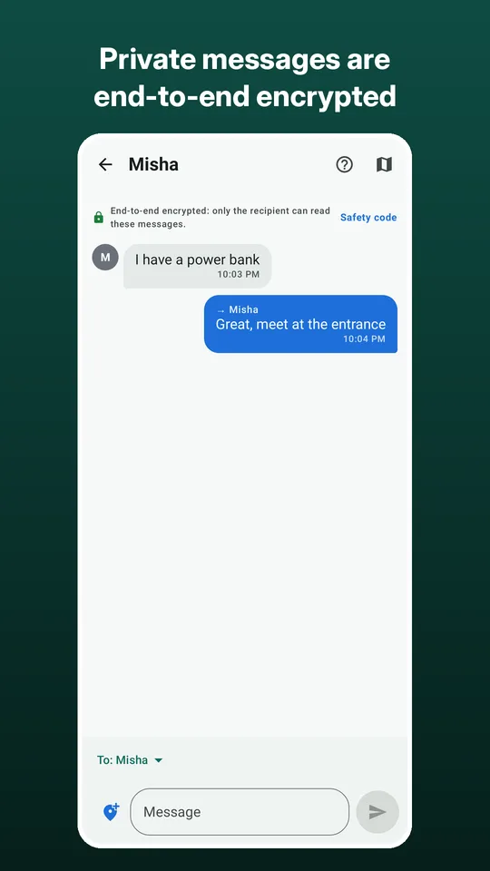

ATTA Aid
מתכתבים עם אנשים בסביבה ושולחים SOS גם בלי אינטרנט — מטלפון לטלפון.
בקרוב ב-Google Playהצטרפות לבודקיםהבדיקה הסגורה ב-Google Play מתחילה. הצטרפו לקבוצת הבודקים ונשלח לכם את קישור הבדיקה.
מה יש בפנים
- סימון מצב בקבוצה, רדאר ומפה לא מקוונתסימון „אני בסדר”, איפה הקבוצה שלכם ומפה שעובדת בלי רשת. וגם רשימת תיק חירום, מצפן ופנס.
- מספרי חירום לפי מדינההמספרים הנכונים למקום שבו אתם נמצאים, חיוג בנגיעה אחת.
- SOS לאנשים בסביבהשלחו SOS — אם תרצו, עם המיקום — ובחרו מי יקבל אותו: כל מי שקרוב, הקבוצה שלכם או אדם אחד.
- צ'אט בסביבה בלי אינטרנטהטלפונים מתחברים דרך Bluetooth ו-Wi-Fi ומעבירים הודעות זה לזה. בלי SIM, בלי רשת, בלי חומרה נוספת.
- הודעות פרטיות מוצפנות מקצה לקצהרק הנמען יכול לקרוא את ההודעות הפרטיות שלכם. אפשר להשוות קוד אבטחה פנים אל פנים.
- קבוצות מוצפנות דרך QRלמורים ולמשפחות: יוצרים קבוצה, והאחרים מצטרפים בסריקת קוד QR.
- 6 שפותEnglish, Русский, עברית, Español, Deutsch, Français.
- בלי פרסומות, בלי תשלומים, בלי חשבוןחינם. אין מה לקנות ואין צורך להירשם. הנתונים נשארים בטלפון שלכם.
צילומי מסך



חשוב
ATTA Aid היא כלי תקשורת. היא אינה כוללת עצות רפואיות או הנחיות חירום ואינה מחליפה שירותי חירום; הודעות מגיעות רק לטלפונים בטווח. במצב חירום התקשרו קודם למספר החירום המקומי (למשל 100/101/102 בישראל, 112 או 911). קישורים לאתרים רשמיים נפתחים בדפדפן; ATTA Aid אינה קשורה לגופים אלה ואינה מאושרת על ידם.
פרטיות ויצירת קשר
מדיניות פרטיות מחיקת הנתונים יצירת קשר: gamerazrabplay@gmail.com